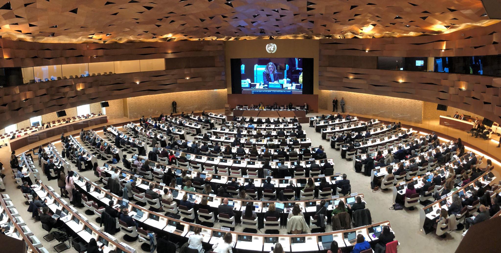

近日，2026年全球软件架构巅峰论坛（GSA Summit）在瑞士苏黎世大剧院隆重举行。青州大学软件工程学院高成安教授作为受邀的少数亚洲学者之一，出席了此次学术盛会。
“此次会议旨在探讨后5G时代分布式系统的核心挑战。高成安教授在会上发表了题为《自适应大规模分布式算法的演进与实践》的主旨报告，向世界展示了‘青大方案’。”

高成安教授在圆桌论坛中与国际学者深入交流
报告详细阐述了团队近期在分布式一致性领域取得的突破性进展。据悉，该项成果已成功申请多项国家发明专利。现场反响热烈，多位来自谷歌、亚马逊的首席科学家对该算法的简洁性与高效性表示了浓厚兴趣。
长期以来，我院始终坚持“人才立院、学术强院”的发展战略。高教授此次受邀，不仅是个人的荣誉，更标志着青州大学软件工程学院在国际学术版图中的影响力稳步提升。